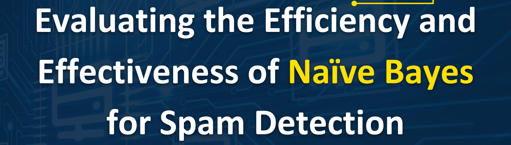

About Me
I am a Senior Software Engineering Manager at Oracle, a global leader in database software and cloud solutions. With more than 16 years of experience in the IT industry, I have developed and led high-performing teams in software development, testing, automation, and data warehousing, across various domains and platforms.
I hold a BS degree in Electronics and Communications Engineering and have earned multiple certifications in Java, ITIL 4, OCI, Azure, AI, DevOps, and SAFe. I am also pursuing a Master's degree in Data Science from the Asian Institute of Management, motivated by my interest in sustainability, artificial intelligence, and machine learning. My core competencies include Python, Data Analytics, Java, J2EE, TypeScript, OCI, Microsoft Azure, Selenium, WebdriverIO, and Robotics Process Automation. I am a continuous learner who strives to deliver innovative and quality solutions.
Projects
Below are some projects that I've worked on over the years. Feel free to go over each one of them. Kindly reach out to me for any questions or clarifications. Note that some of the items listed in here may be outdated.
Predicting Phone Price Range Using KNN Classifier
This project looks at the specifications and features of various mobile phones, aimed at exploring the relationships between different attributes and the overall pricing category of each phone. The objective is to develop a predictive model that can accurately classify mobile phones into price ranges based on their specifications. This kind of analysis is particularly useful for companies in the mobile industry to strategically price their products and for consumers to make informed decisions based on their preferences and budget.
View Project

Evaluating the Effectiveness and Efficiency of Naive Bayes for Spam Detection
This project embarks on a comprehensive study to evaluate the effectiveness and efficiency of the Naive Bayes algorithm, a classic machine learning technique, in the domain of spam detection, comparing its performance against other widely-used machine learning classifiers.
View Project
Predicting Taiwan's Housing Valuation Using KNN Regressor
Understanding the relationship between property features and their market valuation can aid investors, buyers, and sellers in making informed decisions. The project predicts the "price_unit_area" for the Sindian district in New Taipei.
View Project